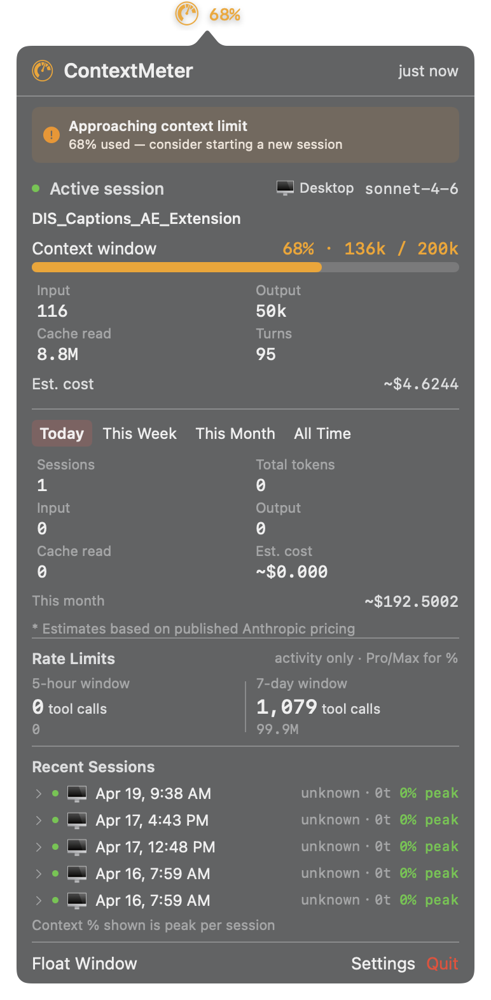
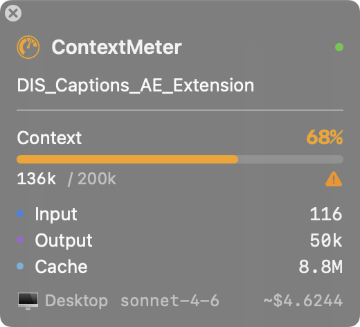

User Manual · Version 1.3 · May 2026
ContextMeter is a macOS menu bar app that shows you how full your Claude Code context window is — in real time, while you work.
Claude Code gives each conversation a 200,000 token context window. Think of it as Claude’s working memory for your session. As you exchange messages, share code, and have Claude read files, that window fills up. When it fills completely, Claude Code starts a new conversation automatically — and you lose the continuity of your session. ContextMeter tells you exactly where you are so you decide when to start fresh, before Claude loses the thread.
ContextMeter works with Claude Code only. Claude Code is Anthropic’s agentic coding tool — the claude command in your terminal, the Code tab in the Claude Desktop app, and the VS Code extension.
| What you’re using | ContextMeter works? |
|---|---|
claude in terminal | ✅ Yes |
| Claude Desktop app → Code tab | ✅ Yes |
| VS Code with Claude Code extension | ✅ Yes |
| Claude Desktop app → Chat tab | ❌ No |
| claude.ai in a browser | ❌ No |
| Your own app using the Anthropic API | ❌ No |
Not sure if you have Claude Code? It’s different from the Claude chat interface — Claude Code is Anthropic’s coding tool, available as a tab in the Claude Desktop app or via the claude command line tool. Free to install at claude.ai/code.
System requirement: macOS 15.0 Sequoia or later.
ContextMeter.pkg from ghstudios.lemonsqueezy.com.pkg file and follow the prompts/Applications/ContextMeter.appContextMeter is signed and notarized by Apple. macOS opens it without any security prompts.
ContextMeter.app to /Applications~/.claude/token_tracker_hooks/~/.claude/settings.jsonNo admin password is required. Everything installs to your home folder. The hooks use only Python’s standard library — no third-party packages, no network access.
On first launch an activation window appears. Enter your license key (from your purchase receipt) and click Activate. ContextMeter verifies the key and unlocks. The key is stored in your Mac’s Keychain — you only enter it once per machine.
ContextMeter lives in your menu bar as a small gauge icon. When a session is active it shows the current context percentage next to the icon.
| State | What you see |
|---|---|
| No active Claude Code session | Icon at rest, no percentage |
| Active, context < 60% | Green — plenty of headroom, work normally |
| Active, context 60–84% | Orange — approaching the limit, plan a stopping point |
| Active, context ≥ 85% | Red — start a new session soon |
Click the icon to open the full popover.


When context crosses your alert threshold (default 60%), an orange banner appears at the top of the popover: “Approaching context limit — consider starting a new session.”
Click Float Window at the bottom of the popover to open a compact always-on-top HUD. It stays visible over all apps including full-screen — perfect for keeping an eye on context while working in your editor or terminal. Drag it anywhere on screen; its position is remembered between launches.
This section explains what each piece of data means and how it affects you as a Claude Code user.
The bar and percentage show how much of Claude’s 200,000-token working memory is used in the current session. It’s a cumulative total of everything in your conversation: your messages, Claude’s responses, file contents you’ve shared, tool call results, and system context.
| Color | Range | What it means |
|---|---|---|
| Green | 0–59% | Plenty of headroom. Work normally. |
| Orange | 60–84% | Getting full. Wrap up your current task and plan a stopping point. |
| Red | 85%+ | Nearly full. Start a new session — Claude may already be missing early context. |
Tokens are the fundamental units Claude uses to process everything. Every session accumulates three types, shown in the active session card and float window:
The ~$X.XX figure is calculated by applying Anthropic’s published per-token pricing for the active model to your Input, Output, and Cache Read totals. The tilde (~) prefix means approximately — actual charges on your Anthropic bill may differ slightly due to rounding and any pricing updates.
The This month figure (visible below the usage history tabs) is your estimated total Claude Code spend across all sessions on this machine for the current calendar month.
Each time you send a message and Claude responds = 1 turn. Tool calls that Claude makes within a single response (reading a file, running a command, editing code) don’t add extra turns — they’re part of that response. A high turn count (50+) indicates a productive, extended working session.
Shows where your Claude Code session is running:
claude CLI in your Terminal app or iTermIf you run multiple Claude Code sessions simultaneously, ContextMeter tracks the most recently active one and shows its source badge.
Four time periods — Today, This Week, This Month, All Time — each showing total sessions, total tokens (Input + Output + Cache combined), and estimated cost for that period.
Claude Code enforces usage limits on rolling time windows. ContextMeter reads these from Claude Code’s status line and displays them so you can see how close you are before hitting a wall mid-session.
A rolling 5-hour cap on tool calls. If you hit it, Claude Code pauses and tells you how long until the window resets. It resets automatically — no action needed from you. The cap starts fresh from the first tool call in any given 5-hour window.
A rolling 7-day (weekly) cap. Pro and Max subscribers get higher limits than free accounts. You’ll almost never hit this unless you’re running intensive automated sessions.
If you haven’t used Claude Code in the last 5 hours, the 5-hour count shows 0 — even if you’ve had a busy day. The 7-day count shows your full week’s cumulative usage, which will be much higher. Seeing “0 tool calls” in the 5-hour window alongside 1,000+ in the 7-day window is completely normal.
Percentage-based rate limit display (e.g. “23% of 5-hour limit used”) requires Anthropic to expose your plan’s cap size — they only do this for Pro and Max subscribers. On a free account, ContextMeter shows raw tool call counts instead. The label means: data is available, but the percentage breakdown requires a paid plan.
The last 5 completed Claude Code sessions, each showing start time, model, turn count, peak context %, and source badge. Click the chevron (›) to expand any session and see the project folder path.
Peak context % is the highest context percentage reached during that session. Color-coded green / orange / red using the same thresholds as the live bar. A session that peaked at 45% was short or low-context; one at 89% was pushing the limit.
ContextMeter sends a macOS notification when your context crosses your configured threshold.
Default threshold: 60% — change it at Settings → General → Alerts → Alert threshold
The orange banner at the top of the popover also appears while context stays above the threshold. A notification fires once per crossing — you won’t be notified repeatedly if context stays high.
If Claude Code hits a rate limit or billing error mid-session, ContextMeter shows it as a colored row below the rate limits section and fires a notification once per new error. Toggle this off at Settings → General → Alerts → Notify on API errors.
Optional. If you add an Anthropic API key, ContextMeter can validate it and show available models. Not required for any core functionality — ContextMeter reads token data from Claude Code’s local session files, not the API directly.
Shows your license status, masked key, machine name, and activation date. Use Deactivate on this Mac to release this machine’s activation slot so the key can be used on another Mac.
~/.claude/settings.json and deletes the hook scripts. Claude Code continues working normally; ContextMeter just stops receiving data.ContextMeter checks for updates automatically once per day. When a new version is available, a dialog appears with release notes and an Install Update button — no manual download needed. You can also trigger a manual check at any time from this tab.
chmod 600 (readable only by your user account)Hooks may not be installed or registered. Go to Settings → General → Hook Status and click Re-install Hooks. Or verify manually:
cat ~/.claude/settings.json | grep token_trackerIf nothing appears, the hooks aren’t registered with Claude Code. Re-install from Settings.
tail -f ~/.claude/logs/token_tracker.logThis is the first place to look when something seems wrong with data collection.
Claude Code updates can reset ~/.claude/settings.json, unregistering the hooks. Go to Settings → General → Hook Status → Re-install Hooks. This takes about 2 seconds.
Expected behavior — usage totals are written when a session ends, not continuously. The active session card shows live data. Once you end the Claude Code session, the history totals update within seconds.
Email apps.ghsnyc@gmail.com or use the feedback button in Settings → About.
/Applications/ContextMeter.app| File | Purpose |
|---|---|
~/.claude/token_tracker.db | SQLite database — all session history |
~/.claude/token_tracker_data.json | Live JSON snapshot — read by the app in real time |
~/.claude/rate_limits_cache.json | Rate limit data from Claude Code’s status line |
~/.claude/token_tracker_hooks/ | Hook scripts installed by ContextMeter |
~/.claude/logs/token_tracker.log | Hook error log — check here first when debugging |
| Version | Date | Notes |
|---|---|---|
| 1.0 | April 2026 | Initial release |
| 1.1 | April 2026 | StopFailure notifications, floating panel error row, data pruning |
| 1.2 | April 2026 | Remove AX monitor false positives; compatibility documentation |
| 1.3 | April 2026 | License gate (Lemon Squeezy), automatic in-app updates (Sparkle) |
| 1.3.1 | May 2026 | Hard license enforcement; always-latest download URL; bundled user manual |
© 2026 Glenn Hernandez Studios · apps.ghsnyc@gmail.com · ghstudios.lemonsqueezy.com